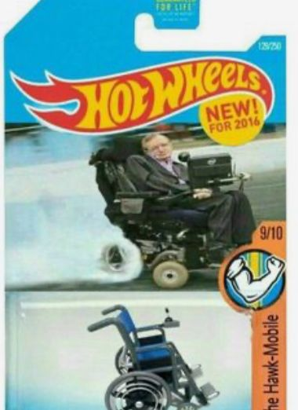

¿Qué es Mobile-First?
El enfoque Mobile-First significa empezar a diseñar una página pensando primero en los celulares. Hoy en día la mayoría de personas navega desde su teléfono, así que la idea es asegurar que la web sea clara, ligera y fácil de usar en pantallas pequeñas. Luego, con media queries, se van agregando mejoras para tablets y computadores, creando una experiencia adaptable y fluida sin importar el dispositivo.
Selectores avanzados en CSS que me parecieron retadores
- Hijo directo (>): Selecciona solo los hijos inmediatos de un elemento. Al inicio lo confundía con el descendiente normal, pero luego entendí que no afecta a “nietos”.
- Hermano adyacente (+): Sirve para aplicar estilos a un elemento que viene justo después de otro. No todos los hermanos, solo el primero.
- Selector de atributos: Permite aplicar estilos a elementos con ciertos atributos. Los modificadores como ^=, $= o *= me resultaron un poco enredados hasta que vi ejemplos prácticos.
Galería
